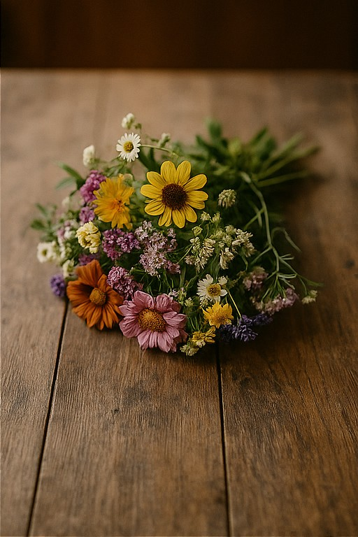
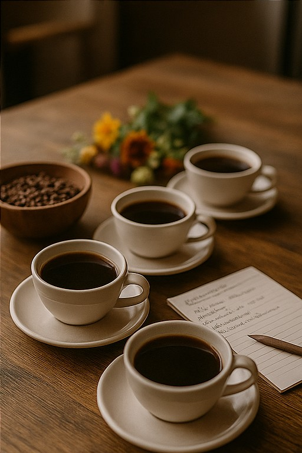
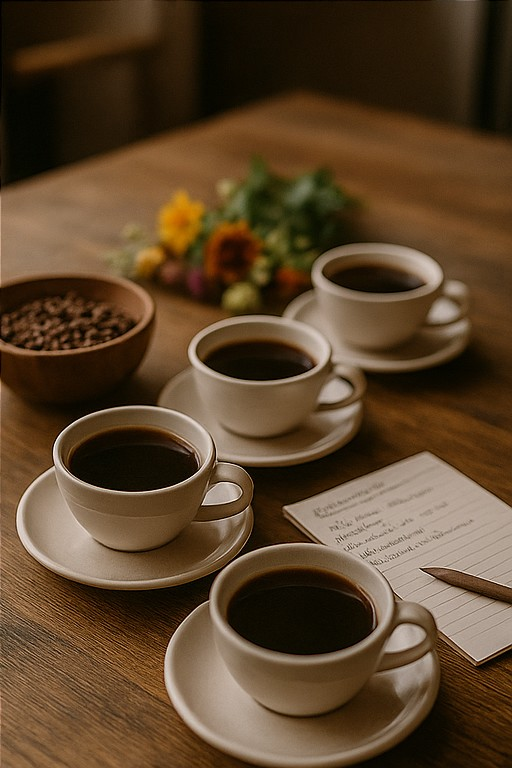
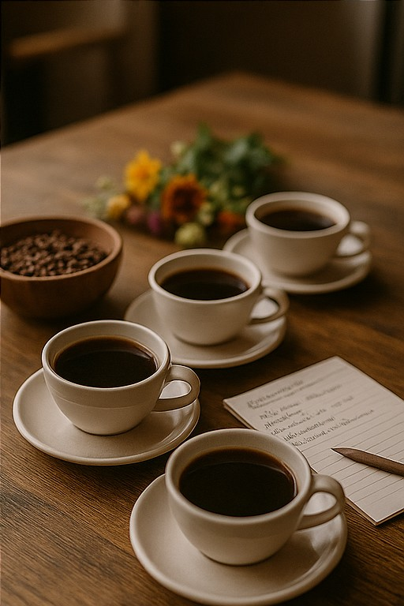

¿Qué ofrecemos?
En Café Primavera unimos la pasión por el café y el amor por las flores en un solo lugar. Aquí puedes disfrutar de:
- Café de especialidad preparado con métodos artesanales.
- Ramos y arreglos florales frescos y personalizados.
- Talleres de arte floral para todos los niveles.
- Catas de café para amantes del buen aroma y sabor.
Servicios

 


Nuestros cafés
En Café Primavera nos enorgullece ofrecer una cuidada selección de cafés para disfrutar en el local o llevar a casa:
Cafés que servimos en la cafetería
- Espresso clásico
- Latte cremoso
- Capuchino
- Americano suave
- Flat white
- Café con esencia de lavanda
- Café helado artesanal
Cafés a la venta
- Bolsa de café de especialidad molido (250g)
- Bolsa de café en grano (500g)
- Edición limitada: café con lavanda (250g)
- Pack degustación (3 variedades)
Talleres y Eventos
Consulta los horarios y precios de nuestras actividades especiales:
| Actividad | Día | Hora | Precio |
|---|---|---|---|
| Cata de café | Miércoles | 18:00 | 10€ |
| Taller de arte floral | Sábado | 11:00 | 15€ |